Creating an account with Oxford Abstracts and logging in
It's a very simple process to get you started with using Oxford Abstracts.#
Skip to:
How to create an account with your email address
How do I know which account I am logged in with?
How does it work if I create an account with Google or LinkedIn?
Before you can use Oxford Abstracts for reviewing, submitting or any other associated role, you will need to create an account with us.
You only need to do this once.
This will enable you to do everything that you need to do on the system, whether you are an account or event administrator, a submitter, reviewer, delegate or committee member.
You can choose to log in with Google, LinkedIn, or create an account with Oxford Abstracts.
If you choose to log in with Google or Linkedin, you will have the option to request a password creation email. You may want to do this if you decide you want to disassociate your Oxford Abstracts account with your third party one.
NB: If you have been invited to create an account by an event admin (e.g. as a reviewer, committee member etc), it is IMPERATIVE you create an account using the email address specified in your invitation email.
#
How to create an account with your email address#
Go to: https://app.oxfordabstracts.com.#
Click on the Create an Account button.
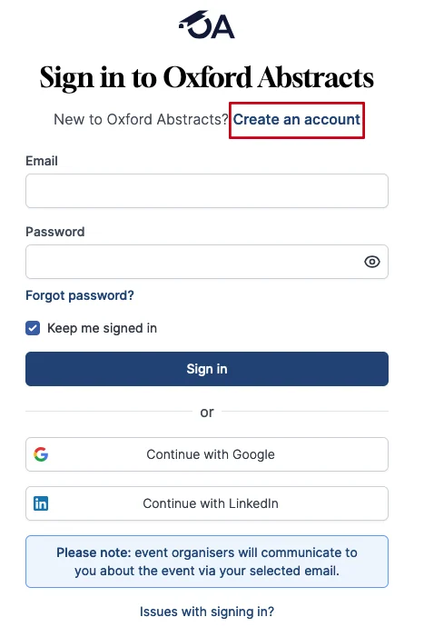
Next select Continue with email.
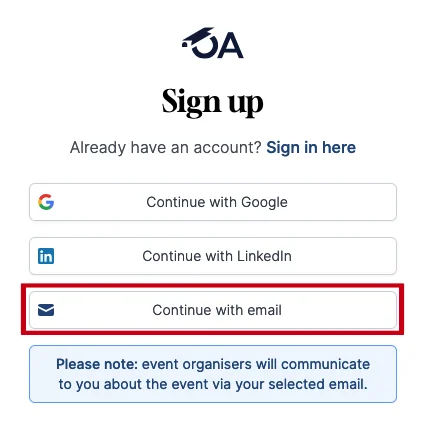
On the next screen you will be required to enter an email address, create a password and enter your name.
For your password you will need to include 8 or more characters, and it must include at least 1 number and 1 letter.
If you do not fulfil these requirements you will not be able to create an account.
You will see Red Crosses under the password box informing you that your password needs to meet the requirements.
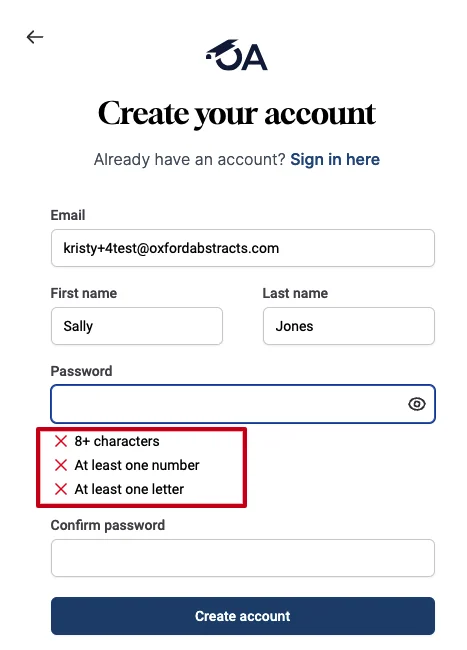
When you have inputted a password correctly, these Red Crosses will change to Green Ticks and you can go onto confirming your password and clicking the button to Create Account.
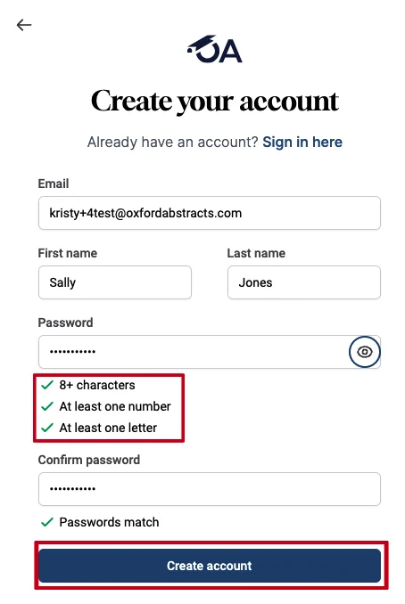
A verification email will automatically be sent to your email address you have used to create your account.
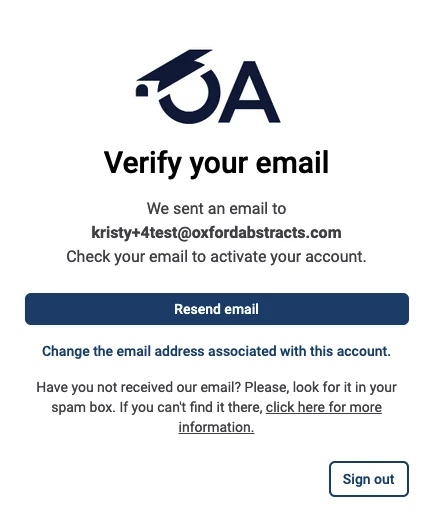
NB: If you do not receive a verification email and you have checked your spam folder, please see what the next steps are in the:
What to do if a verification email hasn't arrived in your inbox Knowledge base article.
Go to your inbox, open the email from Oxford Abstracts and click Verify.
A new tab will appear in your task bar and you will see the Oxford Abstracts sign in screen.
You will see that your email address will automatically be entered into the email box, and the Keep me signed in box will also be ticked.
All you need to do now is enter your password and and click the Sign Button to access your account.
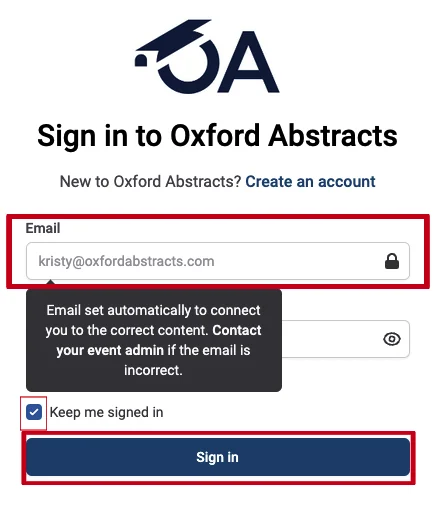
If you try to create an account with an email address that is already registered, you will see the following screen.
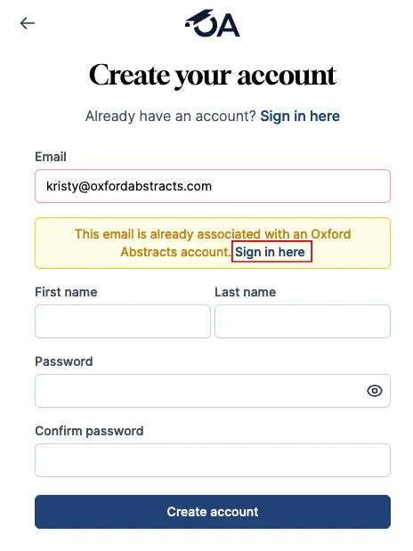
Forgotten Password#
If you have forgotten your password, click on Sign in here (see above image).
From the below screen your email address will automatically be entered (if it isn’t please type it in) and you can click on Forgotten Password?
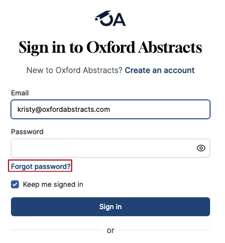
Then enter your email address if it isn’t already showing and click the Send Reset Link button.
This will send a password reset email to your inbox where you can follow the instructions on changing your password.
Please check your spam folder if the reset link doesn't appear in your inbox.
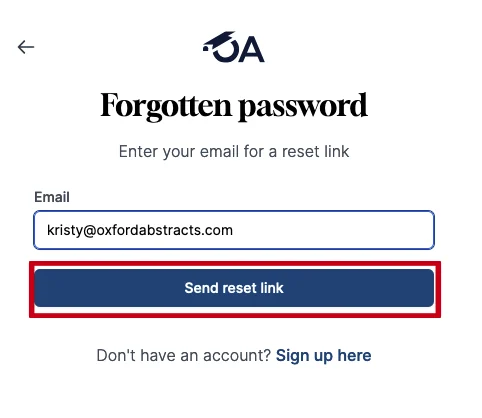
How do I know which account I am logged in with?#
When you are logged into your account, navigate to the top right of your screen and you will see the email address you have used to login with.
If you using a mobile device, click on the icon with your initial to see your email address.
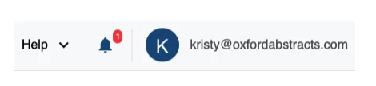
How does it work if I create an account with Google or Linkedin? What email address will be used to create the account?#
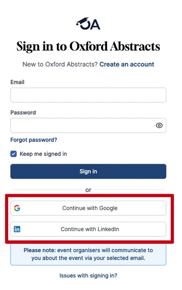
If you have created an account using Google or LinkedIn, you will need to use the same method as above for signing into your account.
The email address that is assigned to your Oxford Abstract account will be the same email address that you use for your Google or LinkedIn account.
The password will be the one that you use for Google or LinkedIn - for example, if you have have selected to use LinkedIn as your login, then you'll need to use the email and password you use to login into LinkedIn to log into your Oxford Abstracts Account.
If you have forgotten your Google or LinkedIn password then you will have to reset this on Google or LinkedIn no via Oxford Abstracts.
If you require further assistance please get in touch with our help desk via our Contact Form.
Common questions#
I’ve forgotten my password – how do I reset it?#
See Creating an account with Oxford Abstracts.
Did this page solve it?
Thanks — this helps us fix it.
Didn't solve it? Ask our support team
No question is too small, and there's no charge for asking. Raise a ticket and someone who knows the software will pick it up.